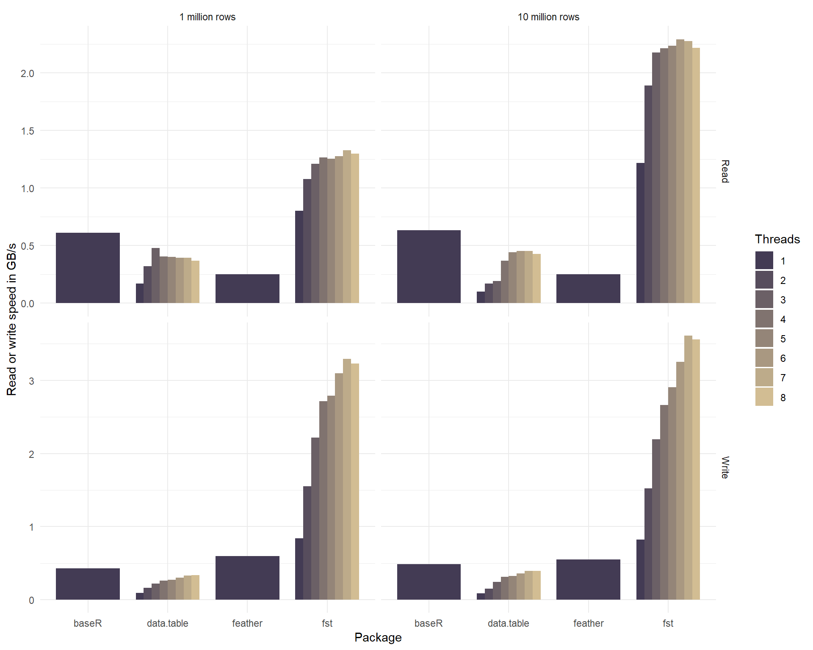

Overview
The fst package for R provides a fast, easy and flexible way to serialize data frames. With access speeds of multiple GB/s, fst is specifically designed to unlock the potential of high speed solid state disks that can be found in most modern computers. Data frames stored in the fst format have full random access, both in column and rows.
The figure below compares the read and write performance of the fst package to various alternatives.
| Method | Format | Time (ms) | Size (MB) | Speed (MB/s) | N |
|---|---|---|---|---|---|
| readRDS | bin | 1577 | 1000 | 633 | 112 |
| saveRDS | bin | 2042 | 1000 | 489 | 112 |
| fread | csv | 2925 | 1038 | 410 | 232 |
| fwrite | csv | 2790 | 1038 | 358 | 241 |
| read_feather | bin | 3950 | 813 | 253 | 112 |
| write_feather | bin | 1820 | 813 | 549 | 112 |
| read_fst | bin | 457 | 303 | 2184 | 282 |
| write_fst | bin | 314 | 303 | 3180 | 291 |
These benchmarks were performed on a laptop (i7 4710HQ @2.5 GHz) with a reasonably fast SSD (M.2 Samsung SM951) using the dataset defined below. Parameter Speed was calculated by dividing the in-memory size of the data frame by the measured time. These results are also visualized in the following graph:

As can be seen from the figure, the measured speeds for the fst package are very high and even top the maximum drive speed of the SSD used. The package accomplishes this by an effective combination of multi-threading and compression. The on-disk file sizes of fst files are also much smaller than that of the other formats tested. This is an added benefit of fst’s use of type-specific compressors on each stored column.
In addition to methods for data frame serialization, fst also provides methods for multi-threaded in-memory compression with the popular LZ4 and ZSTD compressors and an extremely fast multi-threaded hasher.
Multi-threading
The fst package relies heavily on multi-threading to boost the read- and write speed of data frames. To maximize throughput, fst compresses and decompresses data in the background and tries to keep the disk busy writing and reading data at the same time.
Installation
The easiest way to install the package is from CRAN:
install.packages("fst")You can also use the development version from GitHub:
# install.packages("devtools")
devtools::install_github("fstPackage/fst", ref = "develop")Basic usage
Using fst is simple. Data can be stored and retrieved using methods write_fst and read_fst:
# Generate some random data frame with 10 million rows and various column types
nr_of_rows <- 1e7
df <- data.frame(
Logical = sample(c(TRUE, FALSE, NA), prob = c(0.85, 0.1, 0.05), nr_of_rows, replace = TRUE),
Integer = sample(1L:100L, nr_of_rows, replace = TRUE),
Real = sample(sample(1:10000, 20) / 100, nr_of_rows, replace = TRUE),
Factor = as.factor(sample(labels(UScitiesD), nr_of_rows, replace = TRUE))
)
# Store the data frame to disk
write.fst(df, "dataset.fst")
# Retrieve the data frame again
df <- read.fst("dataset.fst")Note: the dataset defined in this example code was also used to obtain the benchmark results shown in the introduction.
Random access
The fst file format provides full random access to stored datasets. You can retrieve a selection of columns and rows with:
df_subset <- read.fst("dataset.fst", c("Logical", "Factor"), from = 2000, to = 5000)This reads rows 1000 to 5000 from columns Logical and Factor without actually touching any other data in the stored file. That means that a subset can be read from file without reading the complete file first. This is different from, say, readRDS or read_feather where you have to read the complete file or column before you can make a subset.
Compression
For compression the excellent and speedy LZ4 and ZSTD compression algorithms are used. These compressors (in combination with type-specific bit filters), enable fst to achieve high compression speeds at reasonable compression factors. The compression factor can be tuned from 0 (minimum) to 100 (maximum):
write.fst(df, "dataset.fst", 100) # use maximum compressionCompression reduces the size of the fst file that holds your data. But because the (de-)compression is done on background threads, it can increase the total read- and write speed as well. The graph below shows how the use of multiple threads enhances the read and write speed of our sample dataset.

The csv format used by the fread and fwrite methods of package data.table is actually a human-readable text format and not a binary format. Normally, binary formats would be much faster than the csv format, because csv takes more space on disk, is row based, uncompressed and needs to be parsed into a computer-native format to have any meaning. So any serializer that’s working on csv has an enormous disadvantage as compared to binary formats. Yet, the results show that data.table is on par with binary formats and when more threads are used, it can even be faster. Because of this impressive performance, it was included in the graph for comparison.
Bindings in other languages
Julia: fstformat.jl A naive Julia binding using RCall.jl
Note to users: From CRAN release v0.8.0, the fst format is stable and backwards compatible. That means that all fst files generated with package v0.8.0 or later can be read by future versions of the package.